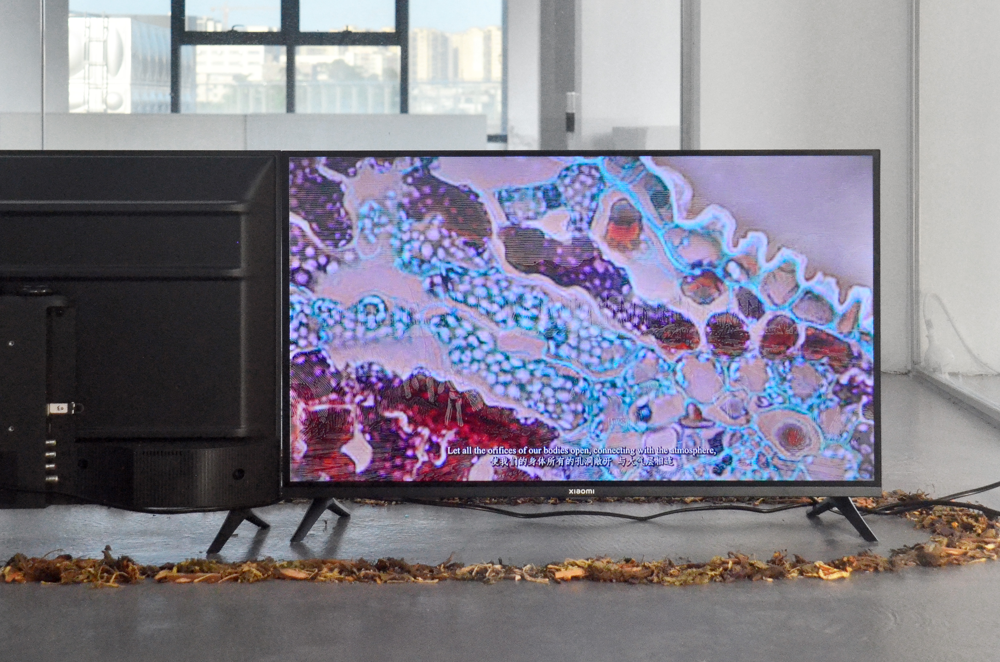

创作
本草：共同呼吸
静帧


简介
《本草：共同呼吸》发生在一个具有致幻效果与草药气味的临时搭建的场所中，以泛灵论仪式的视角，旨在描绘草本植物与人类政治文化进程密不可分的纠缠关系。通过考察并引入对神经退行性疾病有潜在治愈能力的民间草药，作品将抵抗遗忘的地方性（草本）知识与集体灾难下的口述记忆联系起来。泼洒药渣作为一种传统仪式，预示着疾病的退散和共同体成员之间彼此祝福的能力，这种仪式带来的能量被认为足以驱散疾病与邪祟：共同呼吸被赋予突围的能量，并重新铭刻在公共记忆之中，仪式作为集体疗愈的方术，不仅指向着瘟疫的退避，也尝试抚平呼吸禁令与强制遗忘的暴力姿态所遗留下的持久的文化创痕（cultural trauma）。
《本草：共同呼吸》在数字环境中重建并强调了一系列具备混杂与共生特征的植物人类学形象，引导参与者关注植物呼吸的共同性与必要性。有感于土著居民有关自然与植物的萨满教祷词，艺术家草拟了一篇赞颂治愈遗忘的草药的颂歌，辅以意味深远的无调性音乐，试图描摹人类历史中无孔不入的草本力量。参与者被鼓励聚焦于自己与他者的呼吸，重新发现身体的多孔性：呼吸所带来的体液交换，与大气环境中的水体共同指向基于水共同体（hydrocommons）的相互缠绕（entanglement）；复调式的生态环境贯通多种感官，使身体内部、外部与大气层之间的界限变得模糊不清，预示着不可分割、相互依赖的跨种群联盟。
展览现场

参展履历
评论（节选）
“……幕布下的木质地板上放置着同属一直篇章的《本草：共同呼吸》，药草的香气从木质地板上缓缓升起，又弥漫于整个空间。这件作品的概念与‘心智技术’的概念不谋而合……气味属于心智技术的一部分，《本草：共同呼吸》利用 Proust effect 让观众在嗅到药草气味时联想到‘药房’，从而唤醒观众记忆中有关‘治愈’的概念与相关记忆。地上的蒲团错落有致，观众可以在此处休息，或躺或坐。草木的质地与气味引导观众回到原始世界，古老的天空与地面，广阔自然。一切评判与傲慢都在这里随着影像的消失与气味的弥散消逝。仰头看着疗愈人心的影像，嗅着带有致幻效果的草药气，气味与声音这两种介质，承载着我们对驱散疾病与追寻幸福的心愿，此刻，疗愈的效果到达了顶峰。”
— 王宇，《失序之下，时代的祈愿》
